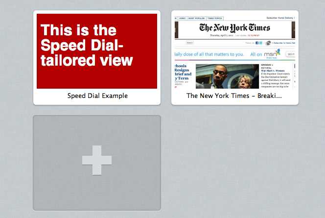

Lassen Sie Ihre Seite in der Schnellwahl erstrahlen
The mechanisms to optimize Speed Dial icons covered in this article are only supported in Opera 11.10 to 12.16, and do not work in Opera 15 and later.
- Einleitung
- Verwendung eines Logos
- Maßgeschneiderten Inhalt für die Schnellwahl anbieten
- Priorität der Schnellwahl
- Opera-Produktunterstützung
Einleitung
Seit Version 11.10 erlaubt Opera Webseitenbetreibern die Kontrolle über das Aussehen ihrer Seite in der Schnellwahl. Standardmäßig verwendet die Schnellwahl einen Screenshot der Webseite. Doch jetzt ist es auch möglich, ein Icon zu definieren oder spezielles CSS als Inhalt für die Schnellwahl anzubieten.
Verwendung eines Logos
Dieser Abschnitt befasst sich damit, wie man ein eigenes Logo für die Schnellwahl verwenden kann.
Icons in HTML5
Wahrscheinlich seid ihr bereits mit Icons für Lesezeichen vertraut. Diese wurden im Jahr 1999 gemeinsam mit dem Internet Explorer 5 eingeführt. Obwohl sie nicht Bestandteil der HTML4-Spezifikationen sind, waren Browserhersteller damit einverstanden, diese Icons zu verwenden, indem Unterstützung für icon als ein Wert im rel-Attribut des link-Elements bereitgestellt wurde. Apple hat diesen Ansatz für Touch-Geräte erweitert, mithilfe von apple-touch-icon. Gemäß den HTML5-Spezifikationen ist icon nun ein gültiger Standardwert für das rel-Attribut.
Ein Icon für die Schnellwahl festlegen
Diese Methode ähnelt sehr stark der Einbindung eines normalen Icons. Es muss lediglich ein <link> Tag im head-Bereich des Dokuments hinzugefügt werden.
<head>
<title>My Opera</title>
<link rel="icon" type="image/png" href="http://path/to/logo.png">
</head>Icons für die Schnellwahl müssen folgende Eigenschaften besitzen:
- Die Größe muss mindestens 114 Pixel breit und 114 Pixel hoch sein. Das ist die minimale Größe für Icons. Kleinere Icons werden ignoriert.
- Sie müssen als PNG, JPEG oder GIF vorliegen. SVG-Bilder werden noch nicht unterstützt. Nur der erste Frame eines animierten Bildes wird verwendet.
Standardmäßig beträgt die maximale Größe für ein Icon 256 x 160 Pixel. Größere Icons werden verkleinert, damit sie passen (icon resize demo). Benutzer können die Standardwerte für die minimale und maximale Größe in den Einstellung von opera:config ändern.
Außerdem bietet Opera 11.10 Unterstützung für apple-touch-icon, apple-touch-icon-precomposed und image_src.
Mehrere Icons verwenden
Es können ebenfalls mehrere Icons angegeben werden. Das ist praktisch, wenn man verschiedene Icons für Lesezeichen und die Schnellwahl verwenden möchte.
<head>
<title>My Opera</title>
<link rel="icon" type="image/png" href="http://path/to/128x128image.png">
<!-- Dies ist das Icon, das für die Schnellwahl verwendet wird -->
<link rel="icon" type="image/png" href="http://path/to/200x200image.png">
</head>Wenn mehr als ein Icon angegeben wird, verwendet die Schnellwahl das größere Icon für die Darstellung (multiple icon demo). Haben beide Icons die gleiche Größe, dann wird das erste von beiden Icons verwendet (same size icon demo).
Maßgeschneiderten Inhalt für die Schnellwahl anbieten
Verwendung von view-mode:minimized

Abbildung 1: Die Schnellwahl in Opera 11.10
Das view-mode Media Feature ermöglicht die Verwendung von Stylesheets je nach Darstellungsmodus. Mittels view-mode: minimized kann ein alternativer Stil verwendet oder spezieller Inhalt dargestellt werden, der für die Schnellwahl angepasst ist. Das view-mode Media Feature funktioniert wie alle anderen Media Features, z.B. device-width. Wie mit jeder anderen Media Query auch, sollten Stylesheets vom @media-Block eingeschlossen sein.
@media screen and (view-mode: minimized) {
body {
color: #fff;
background: #b20000;
}
}Es kann auch ein externes Stylesheet verwendet werden, indem man den Wert des Media-Attributs auf (view-mode: minimized) setzt.
<link rel=stylesheet type="text/css" href="minimizedstyles.css" media="(view-mode:minimized)">Hier ist ein Beispiel von view-mode: minimized bei der Arbeit.
Man sollte beachten, dass view-mode: minimized in der Schnellwahl einen Sichtbereich auslöst, der 256 Pixel breit und 160 Pixel hoch ist.
Verwendung des X-Purpose Header
Es ist ebenfalls möglich, eine andere URL für die Schnellwahl an den Browser zu senden. Dies wird dadurch ermöglicht, dass jede Anfrage der Schnellwahl einen zusätzlichen Header namens X-Purpose: preview enthält.
GET / HTTP/1.1
Host: www.bbc.co.uk/news
X-Purpose: preview
User-agent: Opera/9.80 (Macintosh; Intel Mac OS X 10.6.6; U; en) Presto/2.8.99 Version/11.10Indem dieser Header ermittelt wird, kann entschieden werden, ob eine andere URL verwendet werden soll, ob nur bestimmte Dateien zur Schnellwahl gesendet werden sollen oder ob ein anderer Inhalt angezeigt werden soll. Man beachte, dass dies keinerlei Auswirkungen auf die URL hat, die aufgerufen wird, nachdem ein Benutzer dann auf den Eintrag in der Schnellwahl klickt.
In dem unteren Beispiel verwenden wir Apaches mod_rewrite um alle Anfragen der Schnellwahl zur URL /preview.html weiterzuleiten.
RewriteEngine On
RewriteCond %{HTTP:X-Purpose} ^preview$
RewriteRule ^(.*) /preview.htmlVielleicht wollet ihr aber auch lieber eine serverseitige Sprache verwenden, um verschiedene Inhalte mit der gleichen URL auszugeben. Dieses Beispiel verwendet PHP.
<?php
if ($_SERVER['HTTP_X_PURPOSE'] == 'preview') {
// Sende Schnellwahl-Inhalt
} else {
// Sende normalen Inhalt
}
?>Inhalt in regelmäßigen Intervallen neu laden
Um den Inhalt der Schnellwahl dynamischer zu gestalten, kann das Verhalten für das automatische Neuladen einer Seite festgelegt werden, welches angewandt wird, sobald der Benutzer eine Seite zur Schnellwahl hinzufügt. Dies kann auf zwei Arten geschehen:
Mithilfe eines
metaTags:<meta http-equiv="preview-refresh" content="3600">
Durch Einstellen eines
Preview-RefreshAntwort-Headers:Preview-Refresh:3600
Es ist zu beachten, dass der Wert in Sekunden angegeben wird. 3600 wird die Seite demzufolge jede Stunde neu laden.
In der aktuellen Version von Opera funktioniert die Preview-Refresh Header Methode leider noch nicht. Deshalb sollte man zur Zeit nur die meta Tag Variante benutzen.
Priorität der Schnellwahl
Die Schnellwahl gibt zuerst view-mode: minimized im CSS Priorität. Wenn keine Stileigenschaft vorhanden ist, wird nachgeschaut, ob ein Icon vorhanden ist. Falls kein Icon vorhanden ist oder fehlt bzw. beschädigt ist, dann erstellt die Schnellwahl einen Screenshot der Webseite - dies ist das Standardverhalten.
Opera-Produktunterstützung
Zum jetzigen Zeitpunkt stehen diese Verbesserungen nur in der Desktop-Version von Opera zur Verfügung.
This article is licensed under a Creative Commons Attribution 3.0 Unported license.
Comments
The forum archive of this article is still available on My Opera.
No new comments accepted.